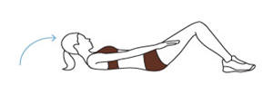
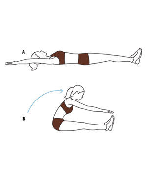
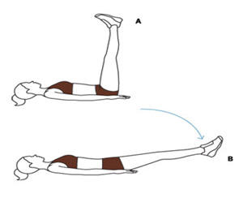
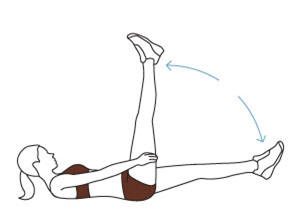
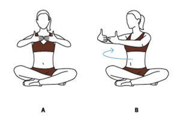

6 Easy Lower Abdominal Exercises
Move 1: Warm-Up: Ab Prep
Lie on your back with your knees bent, feet flat on the floor.
Inhale and tuck your chin to your chest. Exhale and slowly curl
just your head, neck, and shoulders off the floor as you lift
your arms and reach toward your feet. Pause and breathe in.
Slowly return to the starting position, breathing out as you go.
Repeat eight times.
|
 |
Move 2: Roll Up
(A) Lying on your back, stretch your arms and extend your legs
so you form a straight line. Inhale, bring your arms overhead,
and begin to curl your upper body off the floor. (B) Exhale when
halfway up and continue rolling forward to reach your toes.
Inhale and reverse the move, exhaling halfway down, to return to
start. Repeat 10 times. |
 |
Move 3: Leg Drop
(A) Raise both legs toward the ceiling. Breathe in and tighten
your abs. (B) Exhale and slowly lower your legs until they’re
about four inches above the floor (or as low as you can go
without lifting the small of your back). Pause and breathe in.
Breathe out as you raise your legs to the starting position.
Repeat 10 times. |
 |
Move 4: Scissors
Raise both legs toward the ceiling. Keeping them straight, lower
your left leg until it’s about six inches off the floor. Lift
your head and shoulders off the floor and grasp the back of your
right leg, gently pulling it toward you. Switch legs and repeat
on other side. Quickly complete 10 reps (no pausing!). |
 |
Move 5: Hip Lift
Raise both legs toward the ceiling and extend your arms on the
floor at your sides, palms down. Inhale and tighten your core
muscles. Curl your hips toward your ribs as you exhale, lifting
your hips off the floor and reaching your feet straight up.
Breathe in as you slowly lower. Repeat 10 times. |
|
|
Move 6: Torso Twist
(A) Sit cross-legged and stretch your arms out in front of you,
with your fingertips touching. Breathe in. (B) With your hips
square and abs tight, breathe out as you slowly rotate your
upper body about 45 degrees to the right. Return to the center
and repeat on your left side. Complete 10 reps. |
 |
|
|